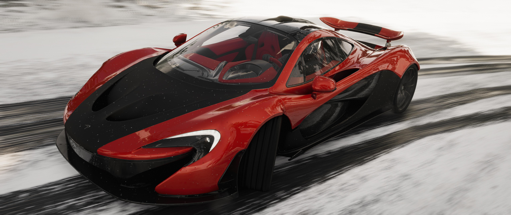
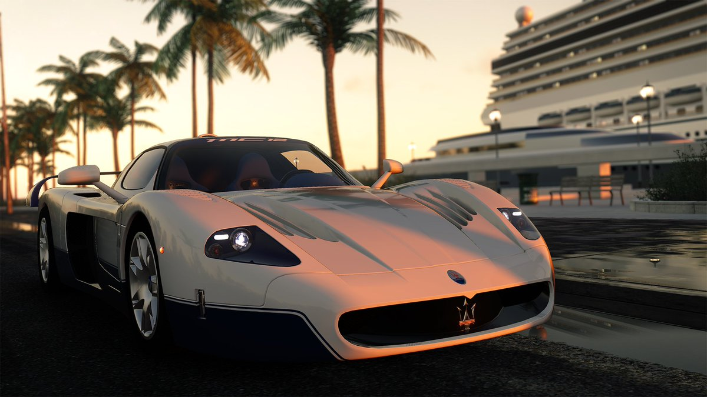
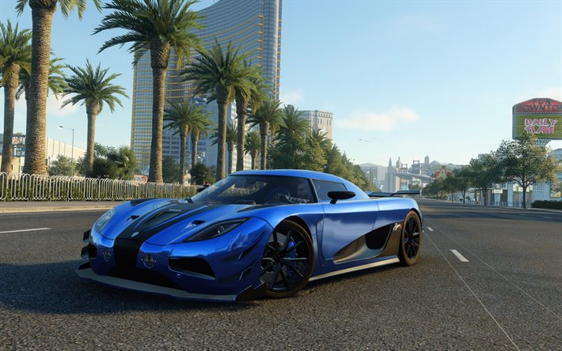

Estos 7 autos son los autos mas rapidos del juego dictado por la velocidad de cada uno en mph (millas por hora).



Las siguientes 3 marcas de automoviles tienen en este juego, los autos más rapidos del juego:
- McLaren: Bruce McLaren fundó McLaren Motor Racing en 1963. Un año después, la compañía construyó el primer auto de carreras McLaren: el M1A; fueron producidas 24 unidades. Su sucesor, el M1B, permitió a McLaren entrar en el campeonato de Can-Am y emergió como el vencedor dominante con 43 victorias, casi tres veces más que su rival Porsche. En 1965, el primer auto de McLaren F1, el M2B, debutó en el Gran Premio de Mónaco.
- Maserati: La marca italiana de automóviles deportivos de alta gama Maserati fue fundada en Bolonia por Alfieri Maserati en 1914. El emblema de Maserati (posiblemente diseñado por Mario Maserati) es el tridente, inspirado en la estatua de la Fuente de Neptuno de Bolonia que adorna la Plaza Mayor de Bolonia.
- Koenigsegg: La compañía fue fundada en 1994 en Suecia por Christian von Koenigsegg, con la intención de producir un superdeportivo de clase mundial. Muchos años de desarrollo y creación de prototipos llevaron a la primera entrega de automóviles de producción de la marca que fue el CC, modelo que al final culminó en el 2002 en el modelo CC8S.